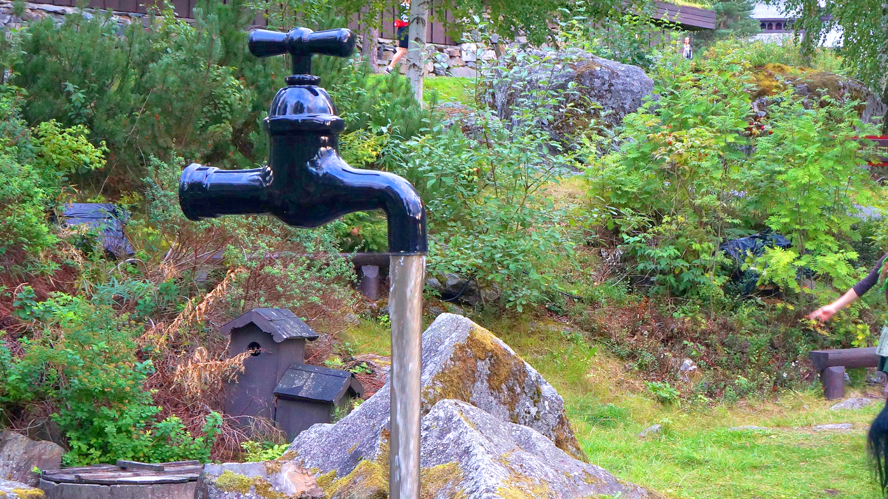
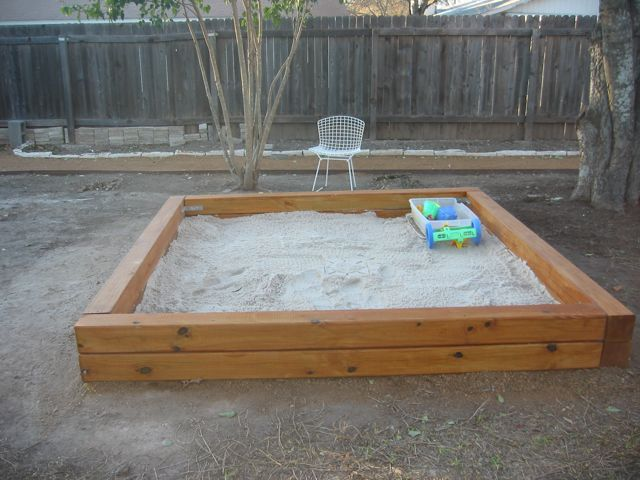
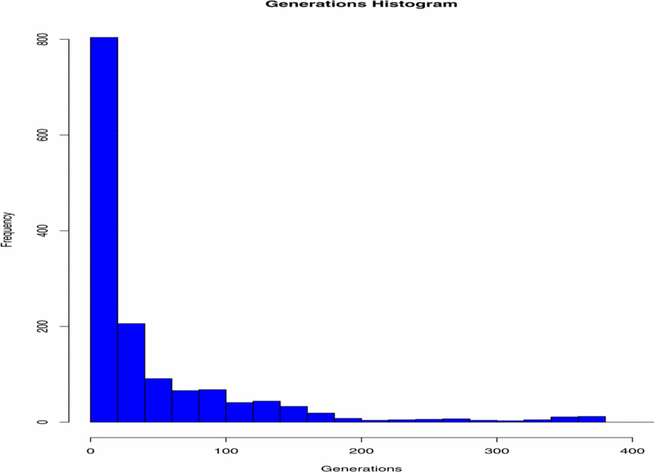
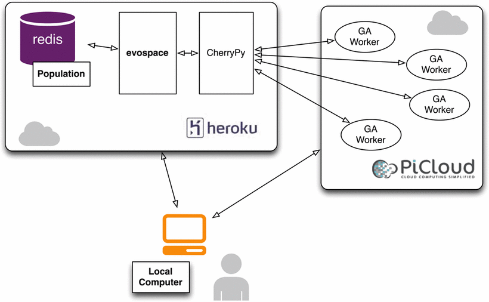
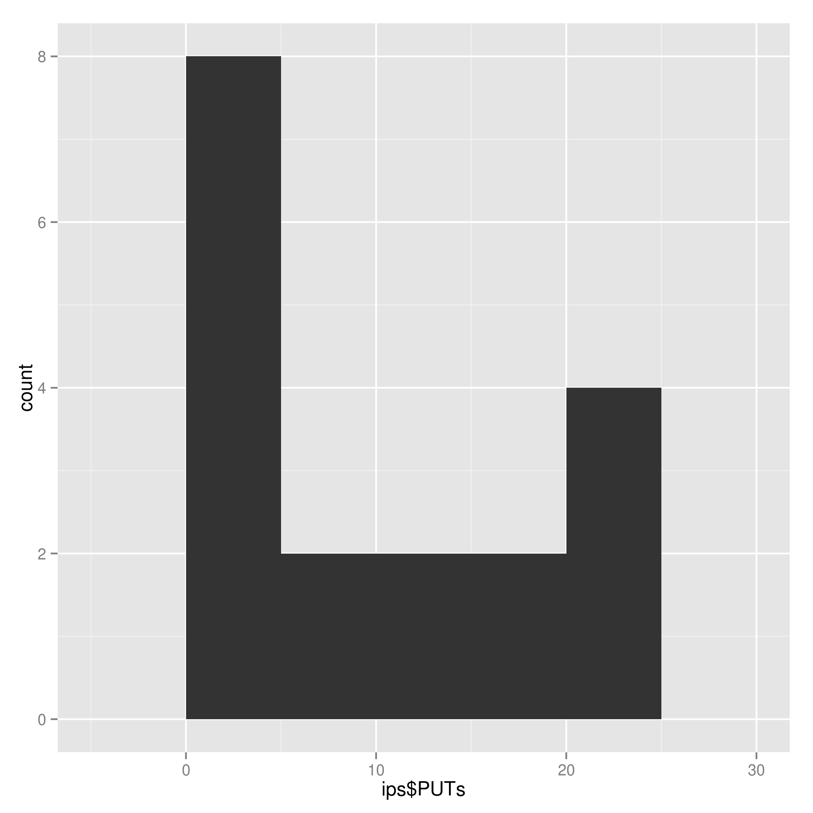
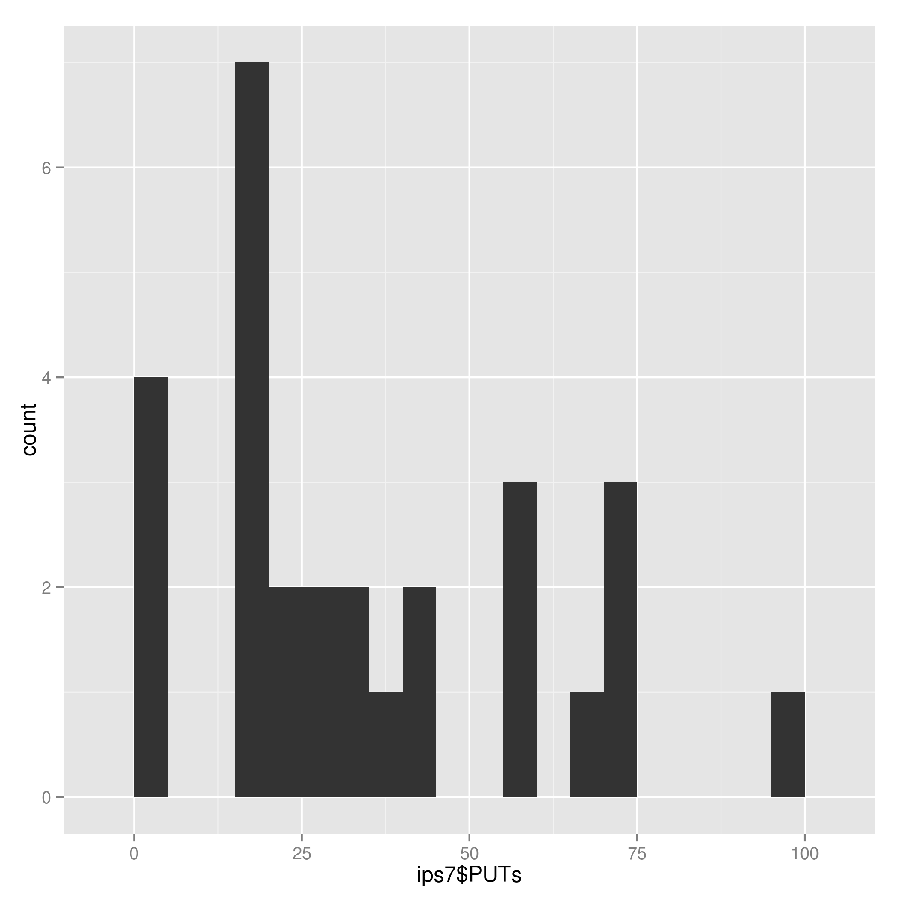
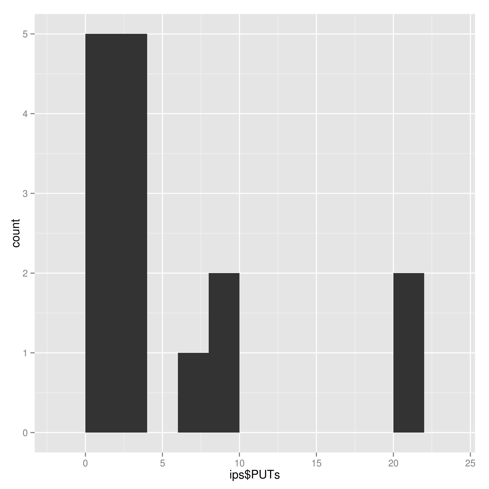

The era of big (computer) science is over
Brother, you got a computing cycle to spare?
Fortunately, everybody does
How many computers do you have on you?
The browser is the new operating system
A long time ago, browser was for browsing
Optimizing Web Page Layout using an annealed Genetic Algorithm as client-side script, PPSN, 1998
JavaScript is its native language
Every browser uses JavaScript
Let's do Javascript!
Menu → developer → console

Say hello to these nice folks!
console.log('¡Hola, chavales!')Or the much more annoying
alert('¿Qué pasa, coleguis?');This is an object. That, too.
console.log('Buenos días'.length)Arrays are objects, and the other way round
console.log(['Buenos días','Buenas tardes','Buenas noches'].pop())Chromosomes and fitness
var chromosome = '1001100110011';
var fitness_of = new Object;
fitness_of[chromosome] = chromosome.match(/1/g).length;
var rr = function (chromosome) {
var fitness = 0;
for (var i = 0; i < chromosome.length; i+=4 ) {
var ones = (chromosome.substr(i, 4).match(/1/g) || []).length;
fitness += ( ones == 0 || ones == 4 );
}
return fitness;
}; JavaScript is:
Standard, (reasonably) fast and
Everywhere
Yes, also in your PS4
(Almost) forget about loops
function do_ea() {
eo.generation();
generation_count++;
if( (eo.fitness_of[eo.population[0]] < traps*conf.fitness.b )
&& ( generation_count*conf.population_size < conf.max_evaluations)) {
setTimeout(do_ea, 5);
} else {
console.log( "Finished ", log );
}
}A whole algorithm/application in a browser
The browser is the new operating system
But I said that already, right?
And why not in the server too?
node.js is an asynchronous JS interpreter. NodEO is an EA library.
var eo = new nodeo.Nodeo( { population_size: population_size,
chromosome_size: chromosome_size,
fitness_func: utils.max_ones } );
do {
eo.generation();
console.log( eo.population[0] );
} while ( eo.fitness_of[eo.population[0]] < chromosome_size );Servers can be in the clouds
What's cloud computing?
On-demand access to virtual devices.
Flickr image by Caleb Khor flic.kr/p/oBGSHw
And you can use it right now
Cloud-based Evolutionary Algorithms: An algorithmic study

Using Dropbox-shared folders for distribution. Easy as saving a file.
Infrastructure as a service
Flickr image by Gil Garcia flic.kr/p/5Pa7ZJ
Platform as a service
Flickr image by Stefani Woods flic.kr/p/4QiGQV
Software as a service
Flickr image by sandifeet flic.kr/p/fPfHJJ
Including development environments
koding is a collaborative online development environment
With a virtual machine you can use from the browser!
Cloud computers are (almost) normal computers
You can use them pretty much in the same way you used them before
Image by Jake von Slatt flic.kr/p/5kGuNd
Is that free?
Almost, but not quite: Flex-GP: Genetic Programming on the Cloud uses Amazon EC to scale up to 350 nodes (with unexpected problems).
You need browsers and volunteers.
Browsers communicate using HTTP commands

PUT, GET, POST, DELETE
Image by Paul Downey flic.kr/p/8yZyBF
Ajax, a standard browser-server communication framework
HTTP petitions from a standard object in the browser.
Asynchronous!
Now we can distribute!
Browser-based distributed evolutionary computation: performance and scaling behavior, GECCO, 2007; showing histogram of generations given by volunteers
We still need the the server
And the sysadmin, and the electricity...
Distributed EA for 10$
Is there a free lunch for cloud-based evolutionary algorithms?, IEEE CEC, 2013
IaaS have free tiers
But it generally is pay-as-you-go
Great if you do small amounts of computation
But then there's freemium PaaS
Heroku, OpenShift and Google AppSpot

Three steps to have your own little free simulation
- Client-server application with JavaScript
- Host it using Heroku/OpenShift
- Tell people in Twitter!
What does that buy you?
It's not really a free lunch
But it's pretty darn close to it
And all the technologies you need use are already there: JavaScript, browsers and Ajax.
Pool-based evolutionary algorithms: not so canonical any more
Flickr image by Lorianne diSabato @flic.kr/p/nXfbQ6
Detaching population from operations

Chromosomes are taken from a persistent pool and brought back after evaluation, mutation, crossover
Three good things about pool-based EAs
Flickr image by Mutiara Karina https://flic.kr/p/a9SSm3.
1. Self-organizing clients
2. Fully asynchronous
3. Persistent population
The island model can also use the pool
But it will have to rely on it for communications
Science as potlatch

Image by Frana Blaylock flic.kr/p/5KCXuQ
Potlatch is a resource redistribution system
== load balancing!
Image by MOPA flic.kr/p/9GEcfB
The performance of your free system will depend on your karma/mojo
Lose a follower, downgrade your volunteer computer system
The power is in the network
As well as possible security holes
Creates a link between persons and tribes
== distributed system!
Potlatch arose from big resource surpluses
You only give what you've got to spare
Scientists give access to knowledge
Open source your science!
Engage community from inception.
Citizen gives attention
And computing resources!
What are you giving back?
Interpretation, participation, engagement, support, know-how for startups...
And play the lab-coat clad villain in movies
Losers can't be chosers
You have to deal with
- (Almost) Unpredictable infrastructure
- Ephemeral contributions: single seconds
- Complex socio-technical system
Take-home messages
- Cloud is the new (grid|cluster)
- Computing resources can be used (mostly) for free
- JavaScript, best way to tap them
- New ways of exploring spontaneous, ad-hoc networks for EC
- The social network plays a role in the performance of the system
Thanks a lot for your attention
Any question?
Download/fork this presentation from git.io/t-ppsn
Any question?
- Code:
git.io/gecco-jj-15 - Tweet your opinion
@jjmerelo
Credits
Big computer from UL Digital library @ flic.kr/p/fsZ74Q.
Begging from Nationaal Archief @ flic.kr/p/9bGRAD.
Flickr image by Kai Hendry flic.kr/p/5omH5r